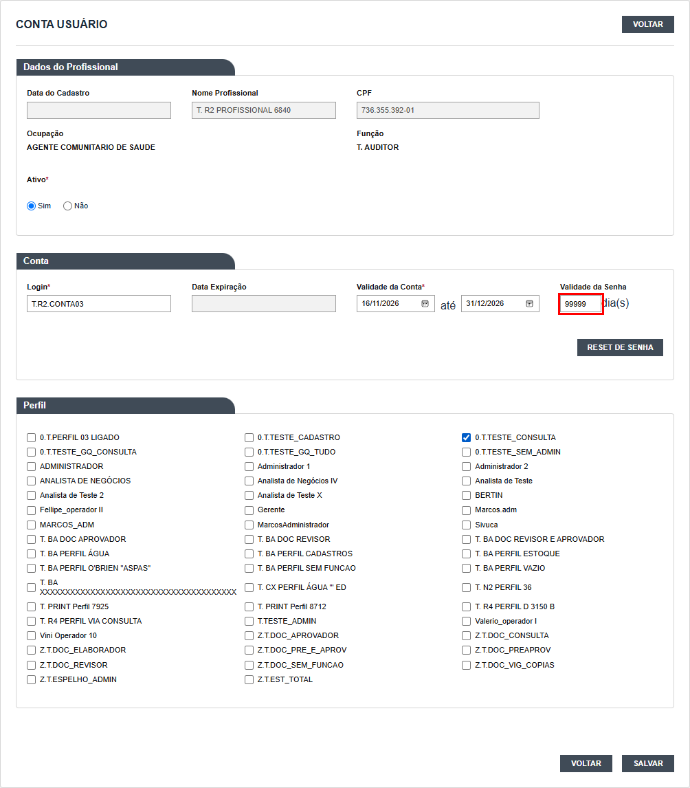
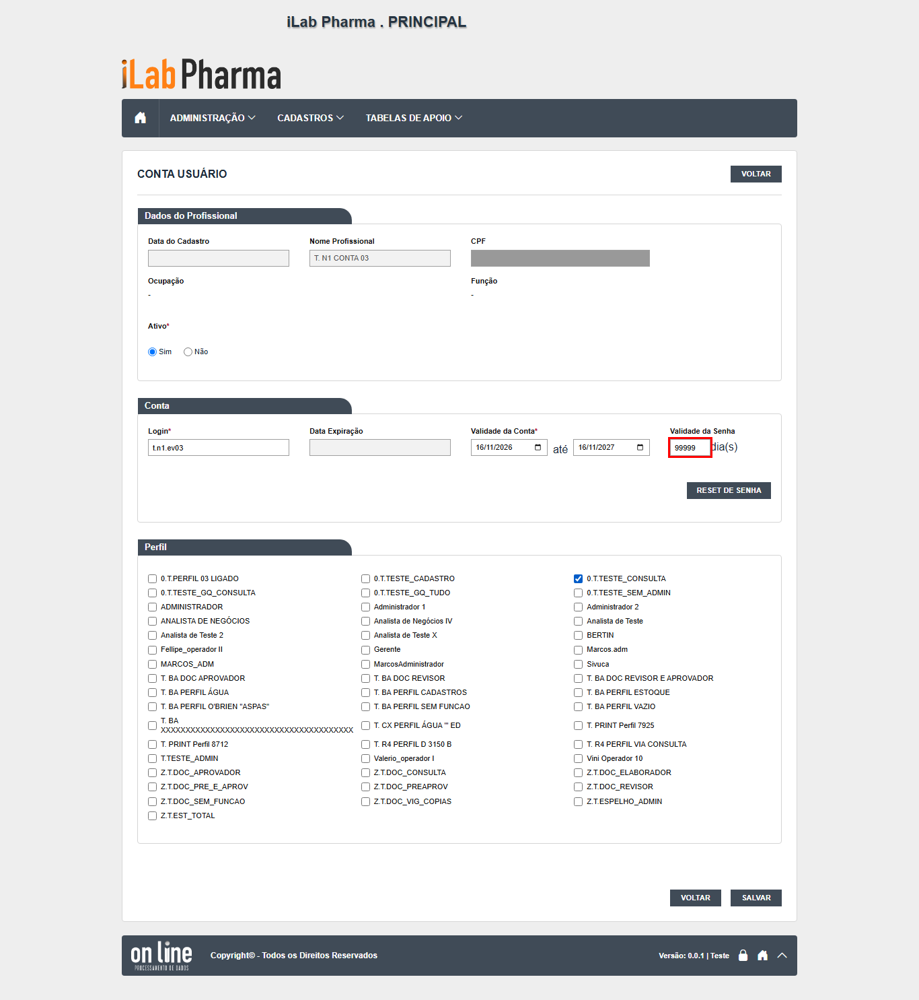
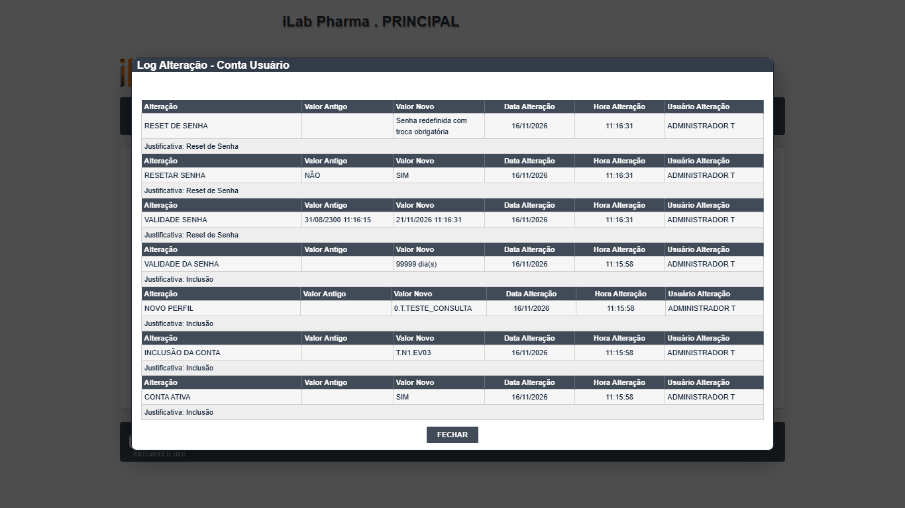
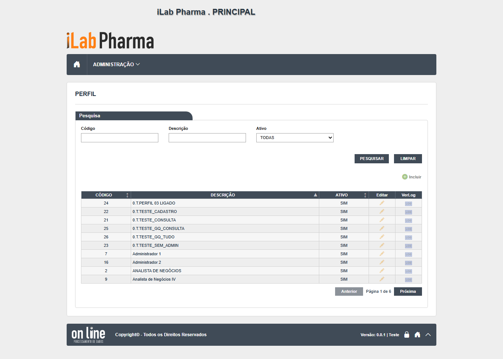

Menu: Administração · Situação do manual: Em ajuste (prints e conferência de 17/11/2026) · Fonte dos prints: versão nova.
Cuidados e falhas conhecidas
| Defeito | Gravidade | O que acontece | Situação na revalidação de 16/11/2026 |
|---|---|---|---|
| DV-PRI-003 / DV-PRI-N-017 | Média | A senha provisória aparece em texto na janela do administrador, na inclusão e no reset, e é gerada no navegador; o reset não pede justificativa e vale antes do SALVAR | Repete em 16 e 17/11/2026 (imagens nos passos 6 e 8) |
| DV-PRI-N-006 | Média | A caixa de perfis mostrava só 10 perfis | Corrigido na edição da conta (50 perfis em caixas de marcar); repete no filtro "Perfil" da lista (só 10 perfis; 17/11/2026) |
| DV-PRI-N-038 | Alta | Não dava para alterar a conta de quem tem perfil fora dos 10 primeiros ("Perfil inválido.") | Corrigido na edição: 50 perfis oferecidos e o perfil da conta vem marcado |
| DV-PRI-N-037 | Média | Perfil inativo some da caixa e quem salva a conta perde o vínculo sem perceber | Sem reteste de 16/11 (repetia em 04/11) |
| DV-PRI-N-019 | Média | A troca de senha feita pelo usuário e os bloqueios não aparecem no histórico da conta | Repete em 16/11 |
| DV-PRI-N-049 | Baixa | Aceita validade da senha de 99.999 dias, o que na prática elimina a troca periódica | Repete em 17/11/2026 (aceitou 99999; imagem abaixo) |
| DV-PRI-N-056 | Média | O reset de senha não encerra a sessão já aberta | Repete em 16/11; não testado em 17/11 (pede duas sessões da mesma conta) |
| DV-PRI-N-045 | Média | Sem separação de funções na própria conta | Sem reteste de 16 e 17/11 (a regra do teste é não alterar a conta em uso) |
| DV-PRI-N-050 / DV-PRI-005 | Baixa | Linha de ruído "RESETAR SENHA SIM → NÃO" a cada gravação | Repete em 17/11/2026 (também ao inativar e ao alterar a validade final; a confirmar com a área) |
| DV-PRI-N-061 | Baixa | A senha provisória da inclusão tem 8 caracteres e a do reset tem 10 | Repete em 17/11/2026 |
| DV-PRI-N-010 | Baixa | A conta parecia não ter como ser criada (pendência de ambiente) | Resolvido em 17/10/2026: o caminho é Profissional, depois o ícone Incluir na linha |
| DV-PRI-N-003 | Média | Na exclusão de conta sem justificativa o servidor recusa (400); a tela mostra só a faixa "Não foi possível realizar a ação." (a ficha dizia que só fechava a pergunta) | Repete em 17/11/2026, com a faixa (imagem no passo 10) |
| R2A-CTA-01 | Baixa | Candidato a defeito (rascunho R2A-CTA-01, a promover): no perfil só de consulta, a dica do lápis diz "Sem permissão para alterar pessoa jurídica" e a do ícone Incluir diz "Sem permissão para incluir pessoa jurídica"; os outros ícones dizem "usuário" | Novo em 17/11/2026 (print PNR2-conta-usuario-31; a dica aparece ao pousar o mouse) |
| R2A-CTA-02 | Baixa | Candidato a defeito (rascunho R2A-CTA-02, a promover): o Excel grava "NÃO" como "NÃO" na coluna Ativo (texto codificado duas vezes; integridade da informação) | Novo em 17/11/2026 (arquivo gerado na rodada, não anexado) |
| R2A-CTA-03 | Baixa | Candidato a defeito, em dúvida (rascunho R2A-CTA-03, a promover): o profissional sem conta aparece com ATIVO "NÃO"; depois de a conta ser criada e excluída, a linha de Incluir mostra "SIM". A área precisa dizer o que a coluna significa | Novo em 17/11/2026 (print PNR2-conta-usuario-30) |
| Dúvida (sem número) | Baixa | No relatório, "Ativo: Sim" se refere ao profissional; a conta inativada continuava "Sim" nele enquanto a lista mostrava NÃO | Observada em 17/11/2026; a confirmar com a área |
| DV-PRI-N-011 | Alta | A API não conferia as funções do perfil | Corrigido no servidor (403) |

Evidência do DV-PRI-N-049 (17/11/2026): o campo com 99999 marcado, aceito ao salvar.

Evidência do DV-PRI-N-049: a conta com Validade da Senha de 99999 dia(s) em destaque vermelho e o perfil "0.T.TESTE_CONSULTA" marcado.

Evidência do DV-PRI-N-019: o histórico da conta T.N1.EV03 traz inclusão, perfil, validade da senha e reset, todos feitos pelo administrador; nenhuma linha registra a troca feita pelo próprio usuário.

Evidência do DV-PRI-N-056: a lista de Perfil continua carregando na sessão aberta antes do reset ("Página 1 de 6").
O que foi corrigido na revalidação de 16/11/2026: a caixa de perfis na edição da conta (N-006 e N-038) e a permissão no servidor (N-011). Continuam: senha provisória à mostra (N-017), histórico sem a troca de senha (N-019), validade de senha sem teto (N-049), reset que não encerra a sessão (N-056) e o filtro de perfis limitado a 10 (conferidos em 16 e 17/11/2026, exceto N-056, que não foi testado de novo). Candidatos novos de 17/11/2026: R2A-CTA-01, 02 e 03.
Diferenças em relação ao legado
| Ponto | Legado (usuario_conta_lst, usuario_conta_ed) | Versão nova | Classe |
|---|---|---|---|
| Login repetido | "O login informando já foi cadastrado: [nome]!" (mostra o dono) | "Já existe um usuário cadastrado com esse login." (sem o dono) | Igual (CT-PRI-042) |
| Conta sem perfil | "O perfil do usuário é obrigatório!" | "Perfil inválido." | Igual, mensagem menos clara (CT-PRI-043) |
| Validade final da conta | Opcional | Obrigatória | Novo |
| Validade da senha | Padrão 60; sem teto | Já vem 60; zero e negativos recusados; 99.999 aceito | Novo (DV-PRI-N-049) |
| Perfis na edição | Lista sem limite | Limitada a 10 (rodada 4); corrigida em 16/11/2026 (50 caixas) | Regressão, depois Melhoria |
| Adicionar e retirar perfil | Exige justificativa; histórico com NOVO PERFIL e PERFIL EXCLUÍDO | O mesmo, com linha de ruído de reset | Igual (CT-PRI-046; DV-PRI-005) |
| Excluir conta sem justificativa | Faixa na tela | Servidor recusa; a tela mostra a faixa "Não foi possível realizar a ação." (17/11/2026) | Igual no caso; mensagem menos clara (CT-PRI-049; N-003) |
| Reset de senha | Não escrevia no histórico (DV-PRI-017) | Escreve "RESET DE SENHA"; continua sem justificativa e vale antes do SALVAR | Melhoria (histórico); Igual (sem justificativa) |
| Senha provisória na tela | Aparece (DV-PRI-003) | Aparece, gerada no navegador | Igual e pior (DV-PRI-N-017) |
| Desbloquear usuário bloqueado | Falhou (DV-PRI-016) | O Reset de senha desbloqueia | Melhoria (RG-PRI-006) |
| Troca de senha e bloqueio no histórico | Não registrava | Não registra | Novo (a confirmar com o DBA) |
| Ícone de consulta (lupa) | Existia para quem só incluía | Não há; só lápis (apagado para quem só consulta) | Novo (conferido em 17/11/2026) |
| Relatório do usuário | "Imprimir Perfils" | Coluna Imprimir (impressora) | Igual (nome mudou) |
Contradições encontradas entre as fontes: o resumo da tela (CT-PRI-049) diz que, ao excluir a conta sem justificativa, a tela só fecha a pergunta e não mostra mensagem, enquanto o caso BA-CTA-24 (execucao/2026-11-09-bloco-a/combinacoes-bloco-a.csv) registra "Não foi possível realizar a ação."; em 17/11/2026 a tela mostrou a faixa, e vale o caso BA-CTA-24. O caso BA-CTA-20 do mesmo arquivo traz o texto "a busca ignora acento" na observação, mas o resultado reconferido ("AGUA" = 0 linhas) e a ficha DV-PRI-N-009 dizem que não ignora: vale o reconferido. O legado marcava a validade final como opcional; a versão nova a exige (execucao/2026-10-17/usuarios-de-teste.md e caso BA-CTA-03).
Prints que faltam
Em 17/11/2026 o robô percorreu o passo a passo e refez os prints. Falta só:
| Passo ou estado | O que mostrar | Por quê |
|---|---|---|
| Excel da lista | As colunas e as linhas da planilha (inclusive "NÃO" na coluna Ativo, R2A-CTA-02) | O arquivo gerado não foi anexado |
| Reset que não encerra a sessão aberta (N-056) | A sessão antiga ainda ativa depois do reset | Não testado em 17/11: exige duas sessões da mesma conta; só há a evidência de 16/11 |
| Alterar o próprio perfil do administrador (N-045) | O administrador alterando a conta em uso | Não testado: a regra do teste é não alterar a conta em uso |
| Busca por nome com acento | A pesquisa com e sem acento | Não testado: não há profissional com acento no ambiente |
| Dicas dos ícones do perfil só de consulta | A dica "Sem permissão para alterar pessoa jurídica" (R2A-CTA-01) | A dica aparece ao pousar o mouse; o print PNR2-conta-usuario-31 mostra os ícones apagados, não o texto |
| Relatório da linha e lista com valores diferentes de Ativo | O relatório da conta inativada ao lado da lista | Dúvida registrada em texto, sem print dedicado |